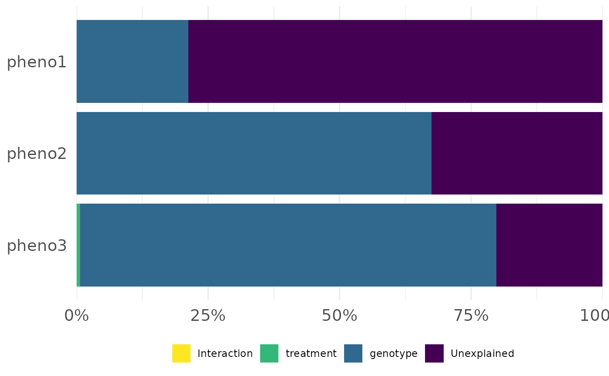
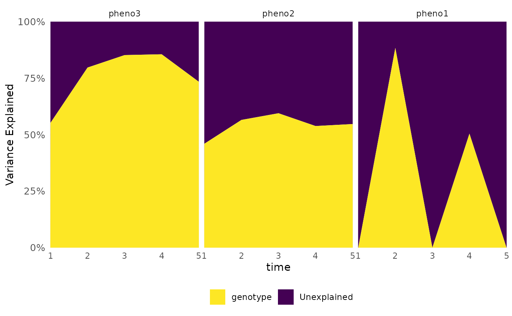
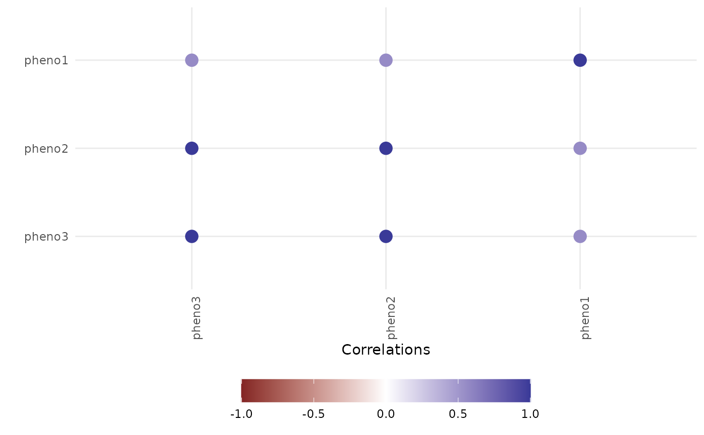
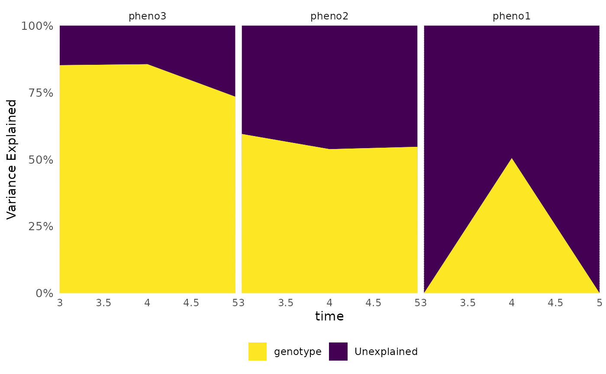
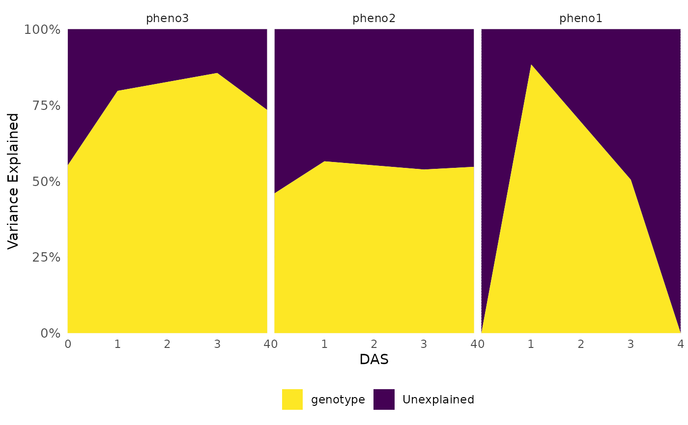

Variance partitioning for phenotypes (over time) using full random effects models (also called Variance Components models).
Usage
frem(
df,
des,
phenotypes,
timeCol = NULL,
cor = TRUE,
returnData = FALSE,
combine = TRUE,
markSingular = FALSE,
time = NULL,
time_format = "%Y-%m-%d",
...
)Arguments
- df
Dataframe containing phenotypes and design variables, optionally over time.
- des
Design variables to partition variance for as a character vector.
- phenotypes
Phenotype column names (data is assumed to be in wide format) as a character vector.
- timeCol
A column of the data that denotes time for longitudinal experiments. If left NULL (the default) then all data is assumed to be from one timepoint.
- cor
Logical, should a correlation plot be made? Defaults to TRUE.
- returnData
Logical, should the used to make plots be returned? Defaults to FALSE.
- combine
Logical, should plots be combined with patchwork? Defaults to TRUE, which works well when there is a single timepoint being used.
- markSingular
Logical, should singular fits be marked in the variance explained plot? This is FALSE by default but it is good practice to check with TRUE in some situations. If TRUE this will add white markings to the plot where models had singular fits, which is the most common problem with this type of model.
- time
If the data contains multiple timepoints then which should be used? This can be left NULL which will use the maximum time if
timeColis specified. If a single number is provided then that time value will be used. Multiple numbers will include those timepoints. The string "all" will include all timepoints.- time_format
Format for non-integer time, passed to
strptime, defaults to "%Y-%m-%d".- ...
Additional arguments passed to
lme4::lmer.
Value
Returns either a plot (if returnData=FALSE) or a list with a plot and data/a list of dataframes (depending on returnData and cor).
Examples
library(data.table)
set.seed(456)
df <- data.frame(
genotype = rep(c("g1", "g2"), each = 10),
treatment = rep(c("C", "T"), times = 10),
time = rep(c(1:5), times = 2),
date_time = rep(paste0("2024-08-", 21:25), times = 2),
pheno1 = rnorm(20, 10, 1),
pheno2 = sort(rnorm(20, 5, 1)),
pheno3 = sort(runif(20))
)
out <- frem(df, des = "genotype", phenotypes = c("pheno1", "pheno2", "pheno3"), returnData = TRUE)
lapply(out, class)
#> $plot
#> [1] "patchwork" "ggplot2::ggplot" "ggplot" "ggplot2::gg"
#> [5] "S7_object" "gg"
#>
#> $data
#> [1] "list"
#>
frem(df,
des = c("genotype", "treatment"), phenotypes = c("pheno1", "pheno2", "pheno3"),
cor = FALSE, returnData = TRUE
)
#> $plot

#>
#> $data
#> genotype treatment Interaction Unexplained dummy_x_axis singular
#> 1 0.2122788 0.000000000 0 0.7877212 1 1
#> 2 0.6744990 0.000000000 0 0.3255010 1 1
#> 3 0.7913918 0.006306318 0 0.2023019 1 1
#> Phenotypes
#> 1 pheno1
#> 2 pheno2
#> 3 pheno3
#>
frem(df,
des = "genotype", phenotypes = c("pheno1", "pheno2", "pheno3"),
combine = FALSE, timeCol = "time", time = "all", returnData = TRUE
)
#> $plot
#> $plot[[1]]

#>
#> $plot[[2]]

#>
#>
#> $data
#> $data$variance
#> genotype Unexplained time singular Phenotypes
#> 1 0.0000000 1.0000000 1 1 pheno1
#> 2 0.4597990 0.5402010 1 0 pheno2
#> 3 0.5522121 0.4477879 1 0 pheno3
#> 4 0.8836435 0.1163565 2 0 pheno1
#> 5 0.5651446 0.4348554 2 0 pheno2
#> 6 0.7968399 0.2031601 2 0 pheno3
#> 7 0.0000000 1.0000000 3 1 pheno1
#> 8 0.5947112 0.4052888 3 0 pheno2
#> 9 0.8520310 0.1479690 3 0 pheno3
#> 10 0.5044749 0.4955251 4 0 pheno1
#> 11 0.5381478 0.4618522 4 0 pheno2
#> 12 0.8556475 0.1443525 4 0 pheno3
#> 13 0.0000000 1.0000000 5 1 pheno1
#> 14 0.5469094 0.4530906 5 0 pheno2
#> 15 0.7342857 0.2657143 5 0 pheno3
#>
#> $data$cor
#> Var2 value Var1
#> 1 pheno3 1.0000000 pheno3
#> 2 pheno3 1.0000000 pheno2
#> 3 pheno3 0.5593985 pheno1
#> 4 pheno2 1.0000000 pheno3
#> 5 pheno2 1.0000000 pheno2
#> 6 pheno2 0.5593985 pheno1
#> 7 pheno1 0.5593985 pheno3
#> 8 pheno1 0.5593985 pheno2
#> 9 pheno1 1.0000000 pheno1
#>
#>
frem(df,
des = "genotype", phenotypes = c("pheno1", "pheno2", "pheno3"),
combine = TRUE, timeCol = "time", time = 1, returnData = TRUE, markSingular = TRUE
)
#> $plot
#>
#> $data
#> $data$variance
#> genotype Unexplained time singular Phenotypes
#> 1 0.0000000 1.0000000 1 1 pheno1
#> 2 0.4597990 0.5402010 1 0 pheno2
#> 3 0.5522121 0.4477879 1 0 pheno3
#>
#> $data$cor
#> Var2 value Var1
#> 1 pheno3 1.0 pheno3
#> 2 pheno3 1.0 pheno2
#> 3 pheno3 0.8 pheno1
#> 4 pheno2 1.0 pheno3
#> 5 pheno2 1.0 pheno2
#> 6 pheno2 0.8 pheno1
#> 7 pheno1 0.8 pheno3
#> 8 pheno1 0.8 pheno2
#> 9 pheno1 1.0 pheno1
#>
#>
frem(df,
des = "genotype", phenotypes = c("pheno1", "pheno2", "pheno3"),
cor = FALSE, timeCol = "time", time = 3:5, markSingular = TRUE,
returnData = TRUE
)
#> $plot

#>
#> $data
#> genotype Unexplained time singular Phenotypes
#> 1 0.0000000 1.0000000 3 1 pheno1
#> 2 0.5947112 0.4052888 3 0 pheno2
#> 3 0.8520310 0.1479690 3 0 pheno3
#> 4 0.5044749 0.4955251 4 0 pheno1
#> 5 0.5381478 0.4618522 4 0 pheno2
#> 6 0.8556475 0.1443525 4 0 pheno3
#> 7 0.0000000 1.0000000 5 1 pheno1
#> 8 0.5469094 0.4530906 5 0 pheno2
#> 9 0.7342857 0.2657143 5 0 pheno3
#>
df[df$time == 3, "genotype"] <- "g1"
frem(df,
des = "genotype", phenotypes = c("pheno1", "pheno2", "pheno3"),
cor = FALSE, timeCol = "date_time", time = "all", markSingular = TRUE,
returnData = TRUE
)
#> Skipping DAS 2 as grouping contains a variable that is singular
#> $plot

#>
#> $data
#> genotype Unexplained DAS singular Phenotypes
#> 1 0.0000000 1.0000000 0 1 pheno1
#> 2 0.4597990 0.5402010 0 0 pheno2
#> 3 0.5522121 0.4477879 0 0 pheno3
#> 4 0.8836435 0.1163565 1 0 pheno1
#> 5 0.5651446 0.4348554 1 0 pheno2
#> 6 0.7968399 0.2031601 1 0 pheno3
#> 7 0.5044749 0.4955251 3 0 pheno1
#> 8 0.5381478 0.4618522 3 0 pheno2
#> 9 0.8556475 0.1443525 3 0 pheno3
#> 10 0.0000000 1.0000000 4 1 pheno1
#> 11 0.5469094 0.4530906 4 0 pheno2
#> 12 0.7342857 0.2657143 4 0 pheno3
#>